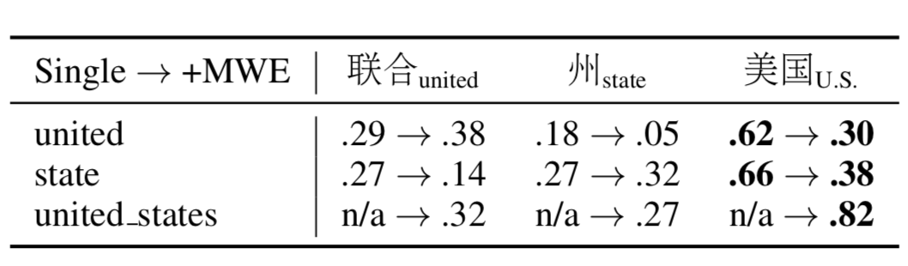
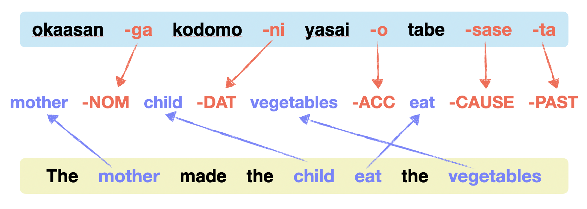
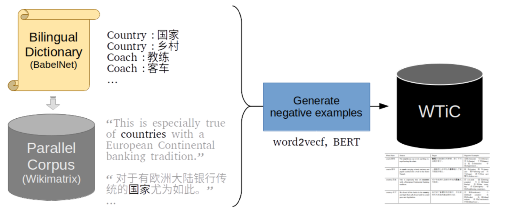
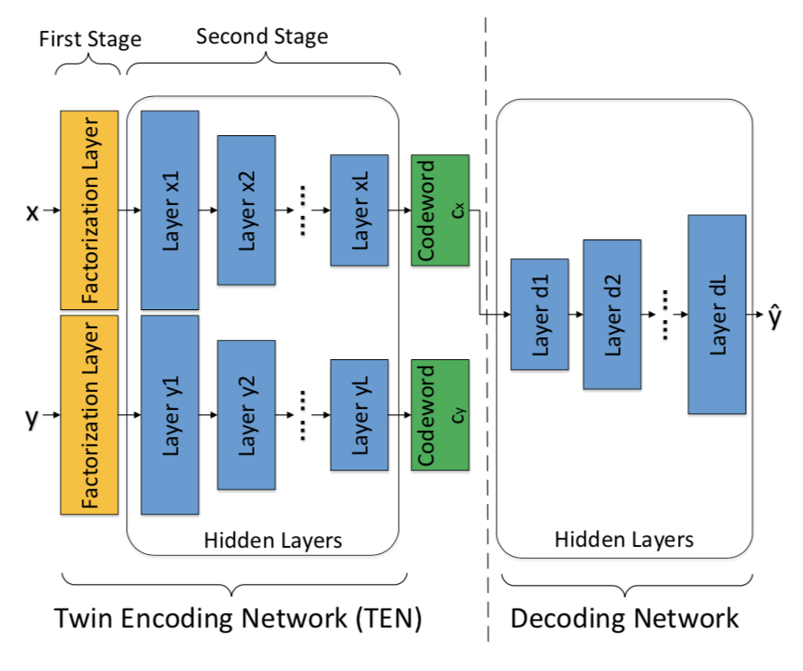
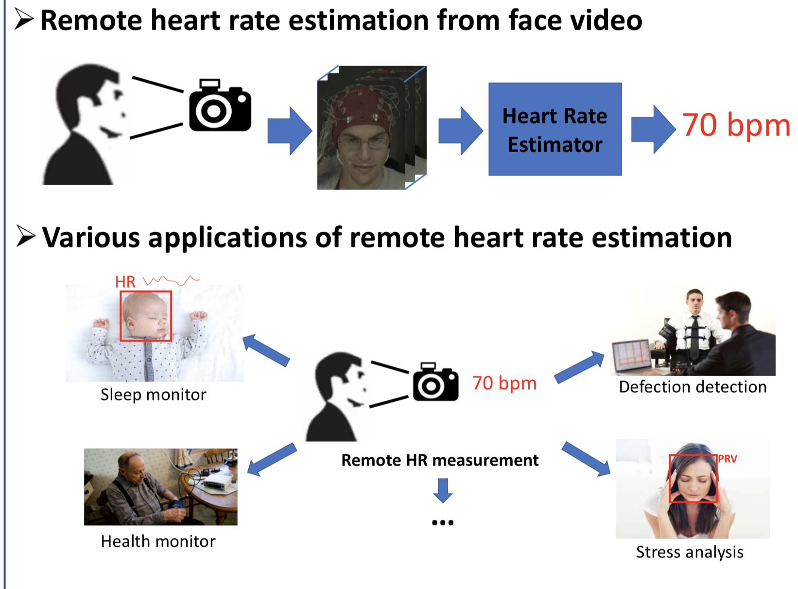
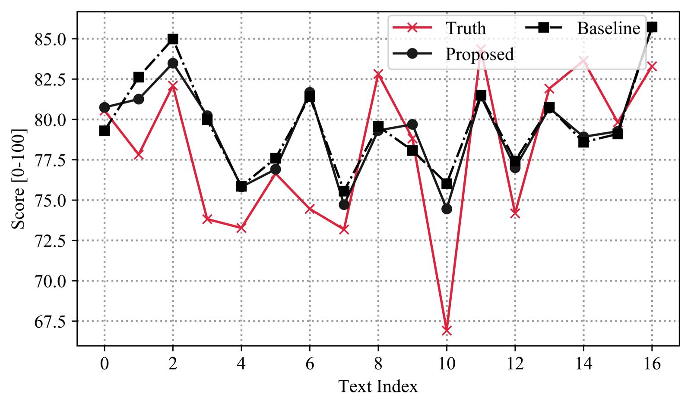

About
Welcome here! I am Xingyuan, a graduate student of Language Technologies Institute in the School of Computer Science at Carnegie Mellon University. I am fortunately advised by Professor Graham Neubig and Professor Lori Levin. Before that, I received my bachelor degree in Translation and Linguistics from Zhejiang University, where I minored in Computer Science.
My research interests span from Computational linguistics to Natural Language Processing. In particular, I am interested in machine learning methods that are linguistically motivated, and the computational approaches that answer the scientific questions of linguistics. My goal is to build natural language processing systems that are more close to human cognition and encoded with human knowledge.
Experiences
2019- Research Assistant @ Language Technologies Institute, Carnegie Mellon University
Advisor: Prof. Graham Neubig, Prof. Lori Levin
2018-2019 Research Intern @ Language and Cognition Lab, Zhejiang University
Advisor: Prof. Junying Liang
2017-2018 Research Intern @ The Big Data Intelligent Computing Lab, Zhejiang University
Advisor: Prof. Gang Chen
Education
2019 - M.S. Computer Science in Language Technologies Institute @ Carnegie Mellon University
2015-2019 B.A., Translation and Linguistics, Minor in Computer Science @ Zhejiang University
2017 Exchange Student @ UC Berkeley
Publications

Multi-word Expression in Cross-lingual Word Embeddings
Multi-word expressions, combinations of multiple orthographic words behaving as one word, are common in every language, and one word in one language is often translated into an MWE in another. Existing cross-lingual word embedding studies rely on orthographic words separated by white-space with minimal consideration for multi-word expressions. We proposed a method using lexicon-based tokenization of MWEs to improve Cross-lingual word embedding performance.
EMNLP '20

Automatic Interlinear Glossing for Under-Resourced Languages Leveraging Translations
Interlinear Glossed Text (IGT) is a widely used format for encoding linguistic information in language documentation projects and scholarly papers. Manual production of IGT takes time and requires linguistic expertise. We tackle the issue by creating automatic glossing models, using modern multi-source neural models that additionally leverage easy-to-collect translations. We further explore cross-lingual transfer and a simple output length control mechanism, further refining our models. Evaluated against three challenging low-resource scenarios, our approach significantly outperforms a recent, state-of-the-art baseline, particularly improving on overall accuracy as well as lemma and tag recall.
Under review.

Cross-lingual Contextualized Embeddings Mapping Evaluation (ongoing)
Contextualized word embeddings outperform static word embeddings in a range of downstream tasks. However, in the dictionary-based word translation task, the typically conducted intrinsic evaluation of word embedding, contextualized word embeddings underperform the static word embeddings. Having only dictionary, researchers could not investigate into the dynamic nature of word embeddings with surrounding words. Thus, we made the first step to contextualize a word translation task.
Under revision to submission.

Two-Stage Label Embedding via Neural Factorization Machines for Multi-label Classification
C. Chen, H. Wang, W. Liu, X. Zhao, T. Hu, G. Chen
Label embedding has been widely used as a method to exploit label dependency with dimension reduction in multi-label classification tasks. However, existing embedding methods intend to extract label correlations directly, and thus they might be easily trapped by complex label hierarchies. To tackle this issue, we propose a novel Two-Stage Label Embedding (TSLE) paradigm that involves Neural Factorization Machine (NFM) to jointly project features and labels into a latent space.
AAAI '19.

Robust Remote Heart Rate Estimation from Face Utilizing Spatial-temporal Attention
X. Niu*, X. Zhao*, H. Han, A. Das, A. Dantcheva, S. Shan, X. Chen
In this work, we propose an end-to-end approach for robust remote heart rate (HR) measurement gleaned from facial videos.
IEEE FG '19.
Selected Projects

Machine Translation for Low-resource Language Using Interlinear Gloss(Ongoing)
How can we improve the machine translation performance under an extremely low-resource scenario? GLoss, as an interlingua representations with morphosyntactic information, may be a great help.
On the Evaluation of Cross-lingual Mappings of Embeddings(Ongoing)
Word translation is dominantly used in cross-lingual word embedding research as a intrinsic evaluation method. However, current researches show no correlation between word translation performance and downstream performance. The accuracy of word-level alignments may not be the core of the success of cross-lingual contextualized embeddings in downstream tasks. Thus, we want to explore factors that make contextualized embeddings outperform static embeddings in downstream tasks and propose multilingual probing tasks.

Interactions of Tone and Prosodic Focus in Whispered Mandarin, A Pilot Study
The absence of F0 in whispered speech affects not only tones, but also prosodic focus, where pitch contour is also an important cue for prominence in phonated speech. The present study attempts to explore whether there are acoustic cues to contrastive focus in whispered Mandarin and if they interact with tonal cues, from both production and perception sides. I first did comparison of tonal and prosodic focus cues in whispered and phonated speech. Then, I examines whether these cues help or hinder the perception of tone and prominence from both phonation types.
Discovering Bias in Pop Culture Portrayal
Pop culture plays an important role in shaping the view of individuals in the modern society. Recent years have witnessed the waves of feminism, racial equality and LGBT social movements in the pop culture. Despite the progress made by generations of great pop culture creators, we still observe the missing of underrepresented groups on screen and their weaker positions as well as stereotyped characters. In this project, we proposed computational methods to quantitatively measure the representation, social status and the degree of stereotypical portrayal of each minority group in the pop culture.
Building and Evaluating Hokchia Language Speech Corpus
Languages are dying. The loss of a single language, legendary linguist Kenneth Hale used to say, “is like dropping a bomb on the Louvre.” Hoping to contribute to the protection of endangered language, I build and evaluate a colloquial Hokchia (an endangered language spoken in southern China) corpus of storytelling record about 71 minutes of good quality signal with transcription written in Hanzi.

Automatic Interpreting Quality Estimation
Designed a computational approach to automate interpreting quality estimation based on interpreting tactics, linguistic features and cognitive science knowledge. Estimated the final score by Support Vector Regression. Outperformed the previous relative research.